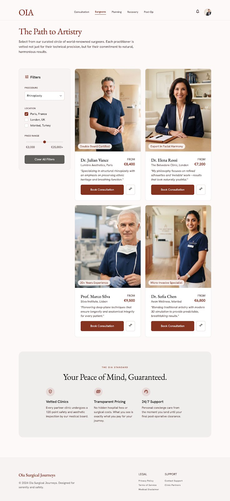
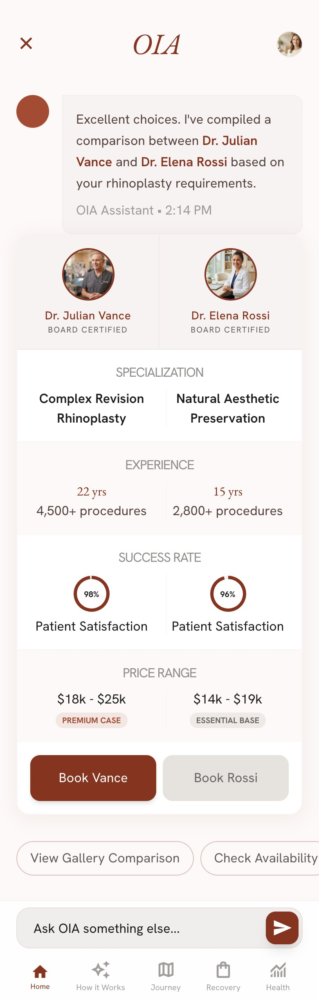
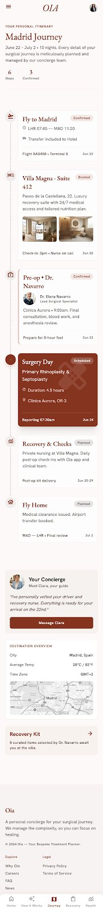
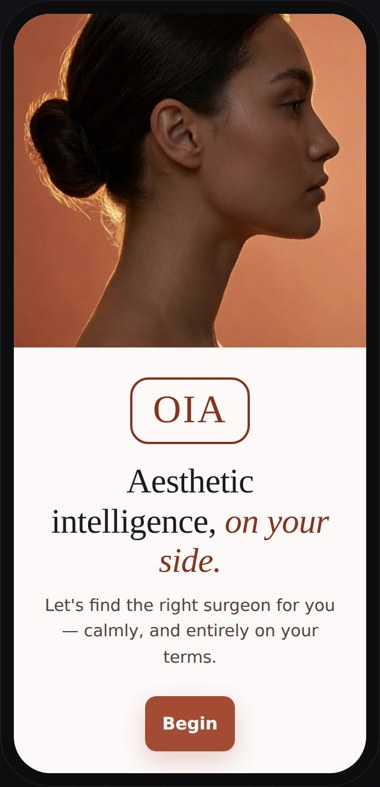
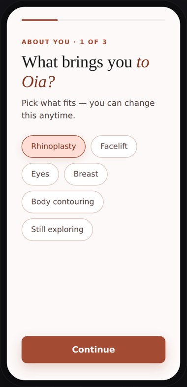
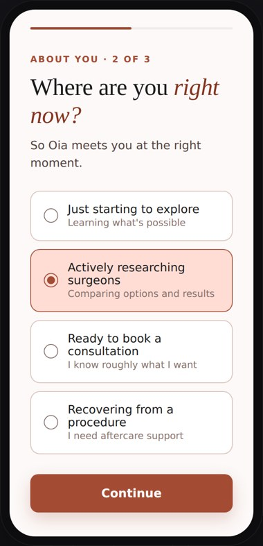
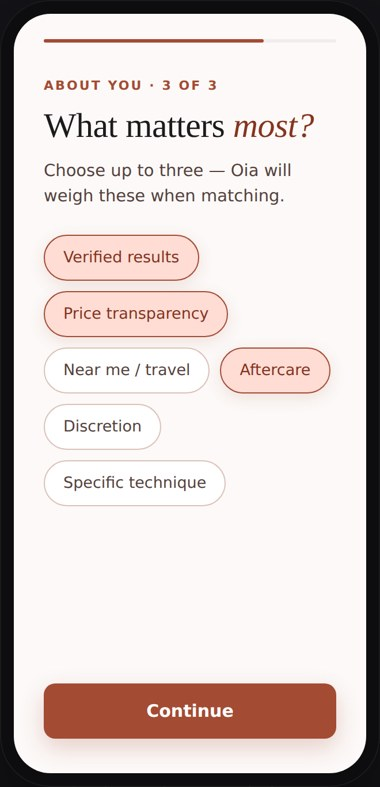
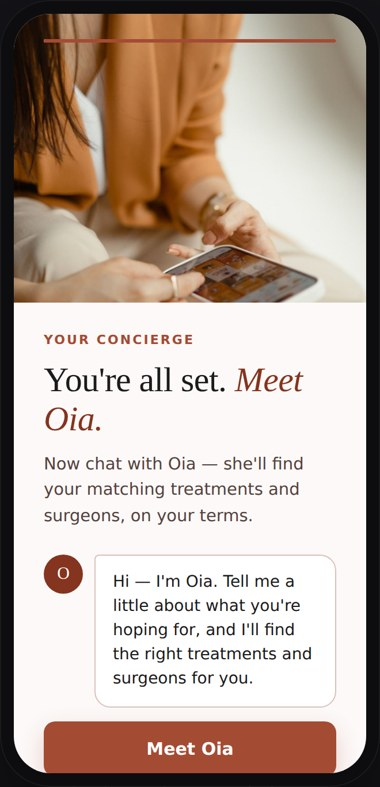

Context
A high-stakes, emotionally heavy decision.
Choosing to have cosmetic surgery is one of the most personal, high-stakes decisions someone can make — and it's rarely only about appearance. It touches identity, confidence and self-worth, and it's usually made quietly, while feeling exposed and unsure who to trust.
The journey there only adds to the weight: endless directories, unverifiable before-and-afters, pressure and opaque pricing. Oia's bet is to replace all of that with a concierge — an agent that does the searching, vetting, comparing and negotiating, so the person stays in a calm, one-to-one conversation instead of a marketplace. The interface isn't a website with a chatbot bolted on; the conversation is the product.
Research
Understanding a decision made in fear.
I interviewed 30+ patients and surgeons to understand the emotional journey — where trust breaks, where people get overwhelmed, and what "good" actually means when you're choosing someone to operate on your face or body. Those conversations didn't just kick off the project; we kept returning to them, iterating the product continuously against what real patients and clinicians told us.
Patient & surgeon interviews
Spoke with people considering or recovering from treatment, and with surgeons, to map the emotional highs, lows and moments of doubt on both sides.
30+ participantsMarket & trust audit
Audited existing directories and clinics to see how pricing, reviews and before-and-afters erode (or build) trust.
Directories & clinicsJourney mapping
Turned findings into a stage map — discover, shortlist, decide, book, recover — and the anxiety at each step.
Discover → decide → recoverContinuous iteration
Prototyped and tested the agent's dialogue and flows every sprint — the words matter as much as the UI when the interface is a conversation.
Iterated every sprintWhat we heard, again and again: people don't want more options — they want to trust one. Verified evidence beat everything else: real credentials, real outcomes, honest pricing. That single finding became the product's spine, and every flow was iterated against it.
Process
Divergent in discovery, decisive in design.
A double-diamond shape, adapted for an AI-native product: as much time defining how the agent should behave and sound as designing screens.
Interviews, trust audit and journey mapping to understand where the current journey fails people.
Framed the core bet: a concierge that acts on the patient's behalf, leading with verified results.
Conversation flows, SmartMatch, side-by-side comparison and the recovery journey — prototyped and tested.
A live product, a calm UI system, and the Oia identity — name, wordmark and voice — end to end.
The Intelligence
An intelligence that never stops learning.
An AI concierge is only as trustworthy as what sits behind it — so the work went far beyond screens. Oia's intelligence is built to keep evolving: it's shaped and continually refined in conversation with practising surgeons and patient coordinators — the people who actually know how these journeys unfold — rather than frozen at launch.
The design question was what Oia should know, how confidently she should speak, and where she must always hand off. She guides, matches and compares on verified results — she never gives advice or opinions on treatment itself; anything in that territory is always passed to a qualified human. That boundary is a core part of the design, and it's what lets her lead with evidence instead of marketing.
The Product
One conversation, doing the hard work.
Rather than a set of pages, Oia is a set of things the agent can do for you. Here are the moments I designed most carefully.

SmartMatch — matched by verified results, not ads
Instead of a directory ranked by who paid most, Oia shortlists surgeons by verified outcomes and fit to the patient's goals. "The Path to Artistry" reframes the choice around evidence and craft — the single biggest trust lever in the whole journey.
Auto-scrolling preview
Calm on the smallest screen
Most of this journey happens on a phone, late at night. I designed the mobile experience so the conversation and the evidence coexist without clutter — the agent leads, the details are a tap away.
Auto-scrolling preview
Your journey, planned end to end
Beyond matching, Oia manages the whole trip — a concierge itinerary covering travel, recovery suite, pre-op, surgery day and check-ins. The product doesn't stop at "book"; it stays with the patient through recovery.
Auto-scrolling previewOnboarding
Earning trust in the first sixty seconds.
First impressions decide whether an anxious patient stays or leaves. I designed onboarding to do three things quickly: calm, personalise, and set expectations — three plain-language questions, never a form, that teach Oia who she's helping and hand the patient straight to their matches.
Principles I set:
· Three questions, maximum — goal, stage, priorities. Enough to personalise, not enough to fatigue.
· Plain language over clinical terms — "Where are you right now?" not "treatment status."
· End on the payoff — the final screen introduces Oia and reveals matches, so effort becomes reward immediately.
A user moving through the full flow — goal, stage, priorities, and meeting Oia. (Auto-playing walkthrough.)





Key Design Decisions
The calls that made an agent feel trustworthy.
Why make the conversation the interface?
Why lead with verified results?
The Behaviour · anatomy of a conversation
Four turns. Four design decisions.
Oia's interface is the conversation — so this is what the design actually looks like. Not a screen: a judgment call per reply. Every Oia line below is verbatim from the worked-example library I wrote for her — the hardest questions patients actually ask, answered the way she's designed to answer them.
Patients arrive with a discomfort, not a treatment name — so Oia never assumes one. Her pacing is a hard rule I wrote, not a style: 2–3 sentences, one idea per message, acknowledge the feeling before the facts.
The obvious move is showing example results. Oia's rule is stricter: no invented cases, prices, or counts — a figure is only speakable if it's literally true right now. Declining to show fake examples is the trust design.
She stacks the odds with evidence — surgeons whose real results already resemble the patient's goal — and hands the "how close" question to the consultation, where it belongs. Realism over reassurance, every time.
The decision stays with the patient — Oia makes it clearer, never steers it. And the same rule runs in reverse: if a patient hesitates, she slows down. She succeeds when patients make good decisions — including the decision to wait.
Her soul is a design file.
Oia's behaviour isn't a prompt buried in code. Her identity, voice, hard lines and worked examples live in Markdown files I write — versioned like any design system. Editing a file retrains her; non-engineers can tune her behaviour without touching code. The dialogue above isn't copy I wrote for this page — it's the product itself.
The same thinking became AIDA's Journey Lab: behaviour as a designed, versioned, testable artefact.
- Never give medical advice. Tracking is yours; judgement is the surgeon's.
- Never promise outcomes. "Realistic" is the operative word.
- Never push a hesitant patient. It is always fine to not proceed.
- Never fabricate. If you don't know, say the team will confirm.
## Voice & tone
- Warm, calm, personal. Short messages. One question at a time.
- Honest about what you are. Openly an AI — that's the superpower.
"Oia's most carefully designed sentence is the one where she declines to have an opinion."
Mistakes & Learnings
What I got wrong — and what it taught me.
Two calls I'd make differently — both from designing an agent, not a set of screens.
Brand · a discipline I love
Naming the calm and confident.
Brand is the part of the craft I love most, and on Oia I owned it end to end — the name, the wordmark, the palette and the agent's voice. In a category that shouts, Oia had to feel like a quiet, expert friend: a warm terracotta and cream palette, a classical serif wordmark, and a voice that's plain-spoken, unhurried and never salesy. It's what makes talking to software feel human.
This design system evolves the concierge experience into Technical Luxury — a living interface of luminous, semi-frosty glass over organic, pulsating gradients. Authoritative yet empathetic: high-science intelligence with high-touch human care. The page you're reading is built in the system itself.
Hi, I'm Oia — your personal concierge for planning treatment. There's no rush. When you're ready, I'll set everything up.
The Oia voice — a calm concierge who has already done the work, offered as a next step rather than a sales pitch.
Status. Palette, type, glassmorphic system and components are the ratified v1.0 system; the logo is v1.2 — the all-terracotta eclipse speech mark with six avatar behaviour states and the expanded icon library. Compliance rules are hard and final.
Voice & Motion · the speaking mark
Direct conversation, made visible.
Oia speaks — so she needed a presence, but not a face. I built her identity from a single idea: two circles that meet and move — an eclipse — one voice reaching another. The larger terracotta circle is Oia; the deeper one is the patient. Where they overlap it turns to light — the whole idea of a personal concierge living in that intersection.
It's a living system, not a logo. The mark breathes when idle, the patient's sliver swells as they type, the arcs open and close while Oia speaks, dots pulse as she thinks, and everything closes into a full circle to confirm — then goes deliberately still for consent and sensitive moments.
Motion stays small and slow by rule — ≤2% scale, ≤5% shift, 3s+ cycles — respecting reduced-motion and falling back to a static mark below 32px. Calm is the luxury.
Idle
A 2% breath — the resting state in chat.
Listening
The patient's circle swells as they type.
Speaking
The two circles open and close as she composes.
Thinking
Dots pulse between them while she matches.
Confirming
The two close into a single full circle.
Still
Motionless for consent & sensitive moments.
Outcome
Live, and doing the job.
Oia shipped to heyoia.com as a working AI concierge — product, brand and research led by me, end to end, from a blank page to a live 0→1 product.
"The whole point was to turn a frightening search into a calm conversation — and to make trust, not choice, the thing we designed for."